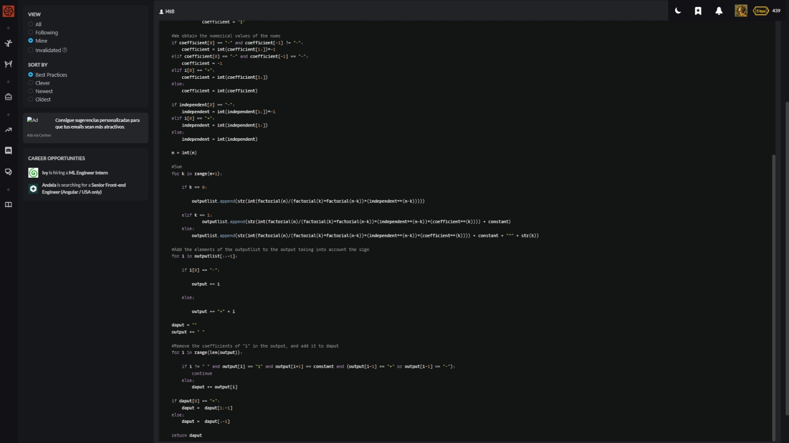
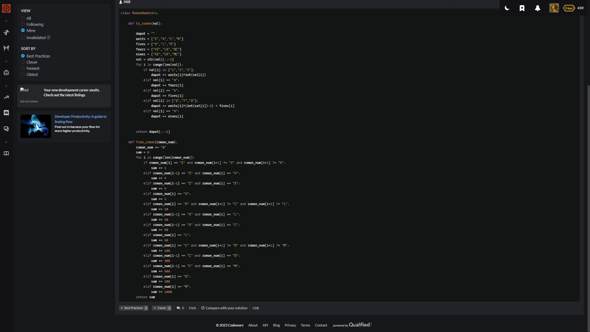
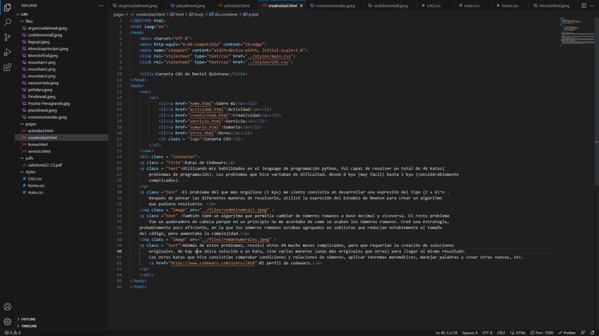
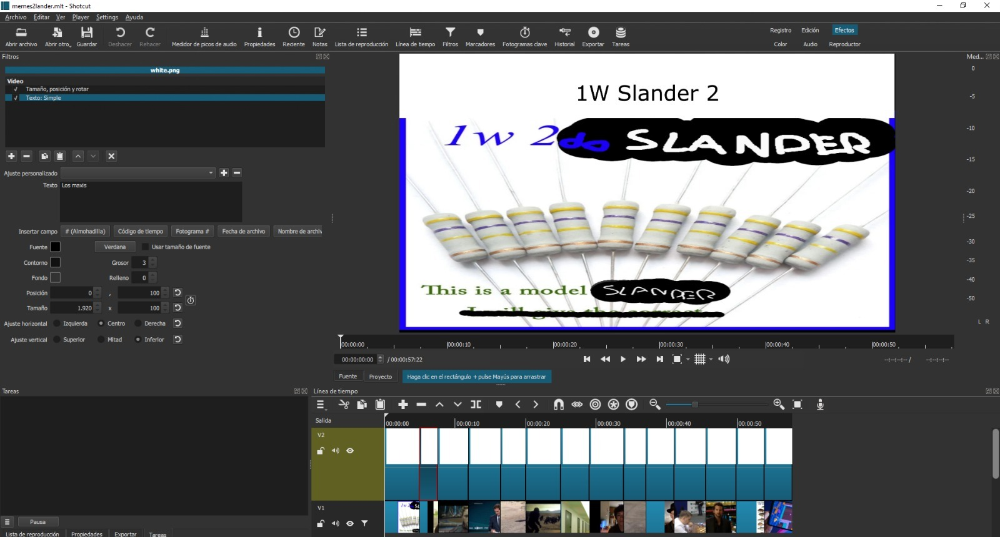
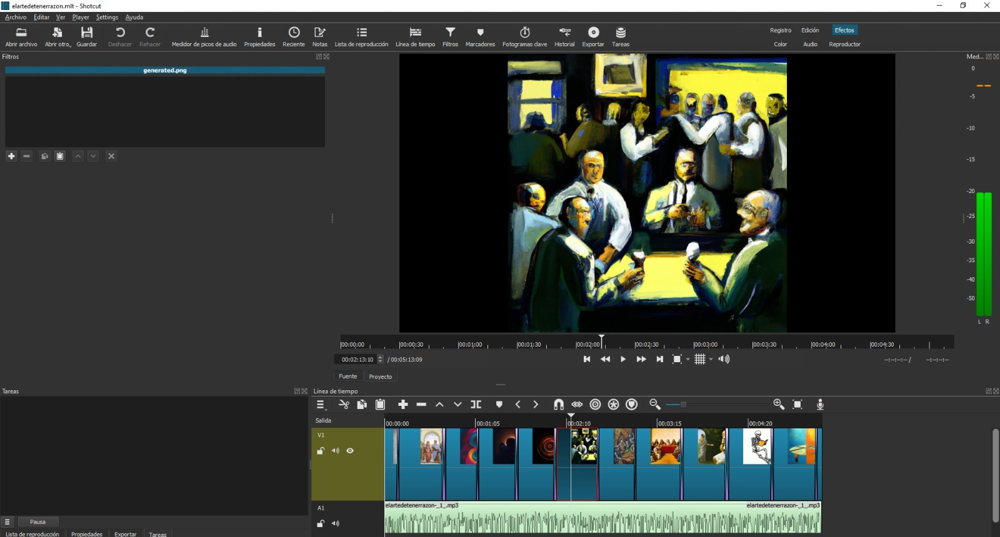
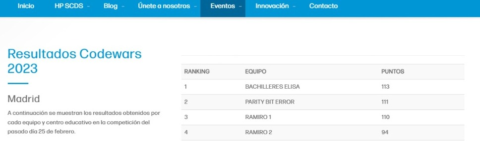
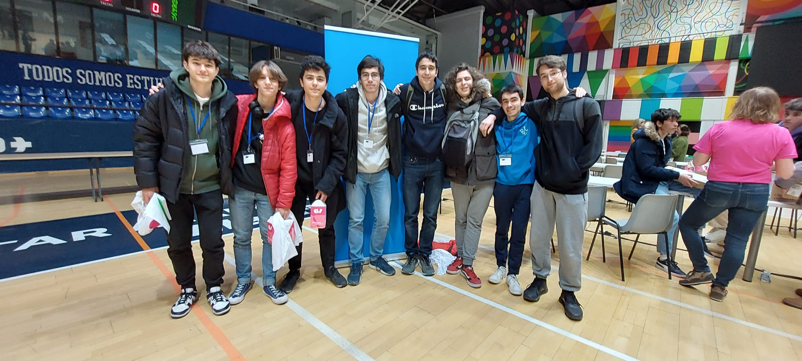

Katas de Codewars
Utilizando mis habilidades en el lenguage de programación python, fui capaz de resolver un total de 46 katas( problemas de programación). Los problemas que hice variaban de dificultad, desde 8 kyu (muy fácil) hasta 3 kyu (considerablemente complicados).
El problema del que más orgulloso (3 kyu) me siento consistía en desarrollar una expresión del tipo (Z + k)^n . Después de pensar las diferentes maneras de resolverlo, utilicé la expresión del binomio de Newton para crear un algoritmo que pudiera resolverlo.
También ideé un algoritmo que permitía cambiar de números romanos a base decimal y viceversa. El resto problema fue un quebradero de cabeza porque en un principio no me acordaba de como se usaban los números romanos. Creé una estrategia, probablemente poco eficiente, en la que los números romanos estaban agrupados en sublistas que reducían notablemente el tamaño del código, pero aumentaba la complejidad.
Además de estos problemas, resolví otros 44 mucho menos complicados, pero que requerían la creación de soluciones originales. No hay una única solución a un kata, sino varias maneras (unas más originales que otras) para llegar al mismo resultado. Los otros katas que hice consistían comprobar condiciones y relaciones de números, aplicar teoremas matemáticos, manejar palabras y crear otras nuevas, etc. Mi perfil de codewars.
La creación de esta página web
Crear esta página web es también un ejercicio de creatividad. Anteriormente a crear este diseño me planteé como quería que fuera el diseño para mi carpeta CAS. Después lo expresé creando el código para la página. Absolutamente todas las características de esta página las he decidido yo. Por ejemplo, si quiero que este texto sea rojo , o si quiero que sea azul y un poco más grande , puedo hacerlo. Todas estas ideas, las integro haciendo uso del lenguage de programación css y html5(este último no es un lenguage, es un marcador de hipertexto). Utilizo el html para darle estructura a la página y el css para darle estilo a todo.
Editaje de videos
Siempre he sido un consumidor habitual de memes, pero nunca me había planteado crearlos yo mismo. Me instalé la aplicación shotcut y diseñé unos vídeos que siguen un estilo de meme llamado "slander" que consiste en despotricar contra alguien o una cosa. A lo largo del curso, hice dos "slanders" de los sucesos que ocurrían en nuestra clase, uno de filosofía y otro sobre los talleres CAS. Aparte de los memes, utilicé mis habilidades para crear un video para ilustrar mi travesía de la línea 6.
Slander de filosofía
Slander de los CASes
Montaje musical de la línea 6
Aparte de estos vídeos hay algunos más sobre la clase del W, pero con el propósito de mantener la página web sencilla no los voy a mostrar.
Canal de youtube
Uno de mis hobbies habituales era ver los videos de filosofía del youtuber Weltgeist. El me inspiró a crear mi un canal propio en español para hablar yo mismo de filosofía. Para grabar un vídeo requiero de grabar el audio, adquirir las fotos y editar el video. El proceso de crear el guion, crear y editar las imágenes con gimp. El canal se llama "uberaristocrat". El prefijo "uber" es una referencia al Übermensch de Nietzsche, y aristocrat es una referencia a aristóteles, quien decía que la aristocracia es el gobierno de los mejores.
Codewars 2023
El 25 de febrero, asistí con mis compañeros (Ramiro 2) del taller de programación Sui géneris al concurso de programación organizado por codewars. Haber practicado tanto con mis compañeros dió sus frutos y quedamos cuartos de treinta equipos. La competición constaba de treinta problemas matemáticos para los cuales se requería ingeniar algoritmos. Me siento particularmente orgulloso de un problema que consistía en averiguar si un tablero de ajedrez era una posición válida o no. Mientras pensaba el problema recordé que podía transformar todo el tablero en una línea de texto y contar la cantidad de piezas con un método para contar la cantidad de letras. Fue una experiencia gratificante, y un buen ejercicio de nuestras capacidades mentales.
 